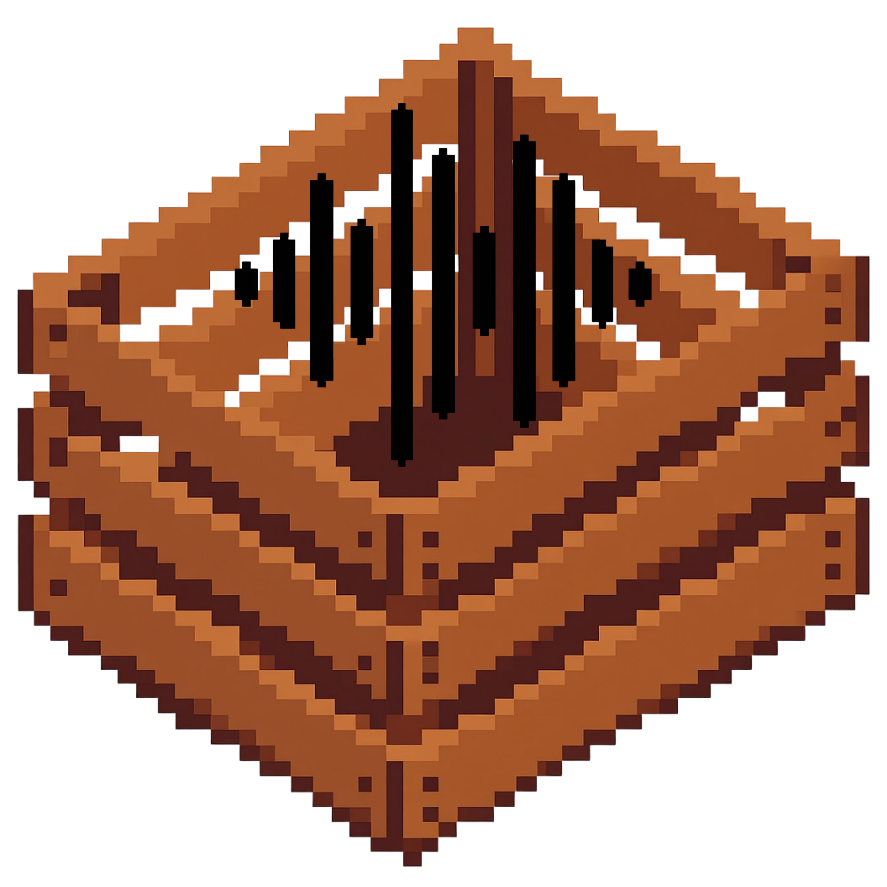
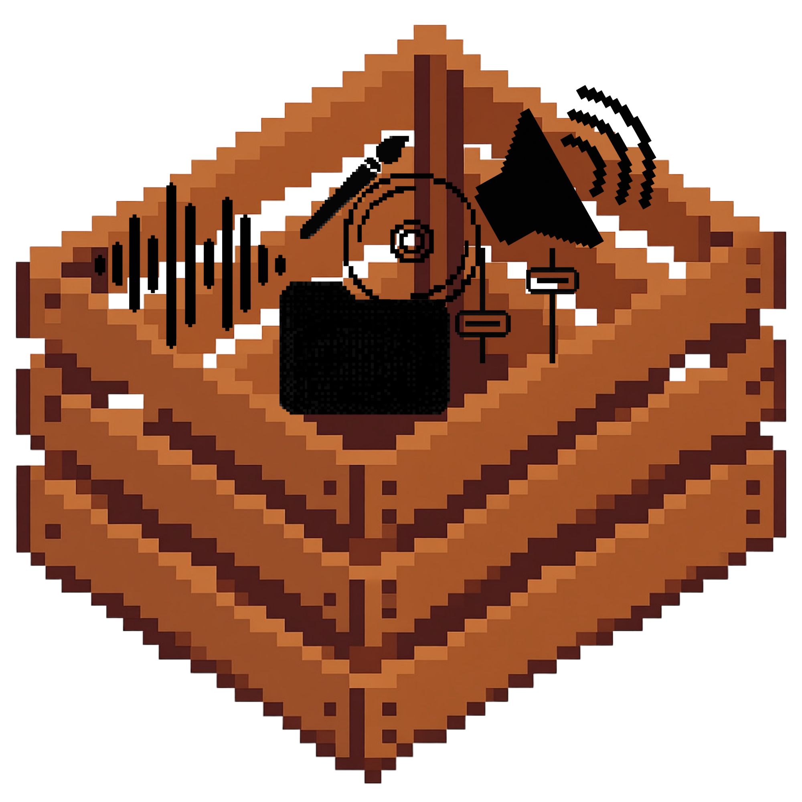
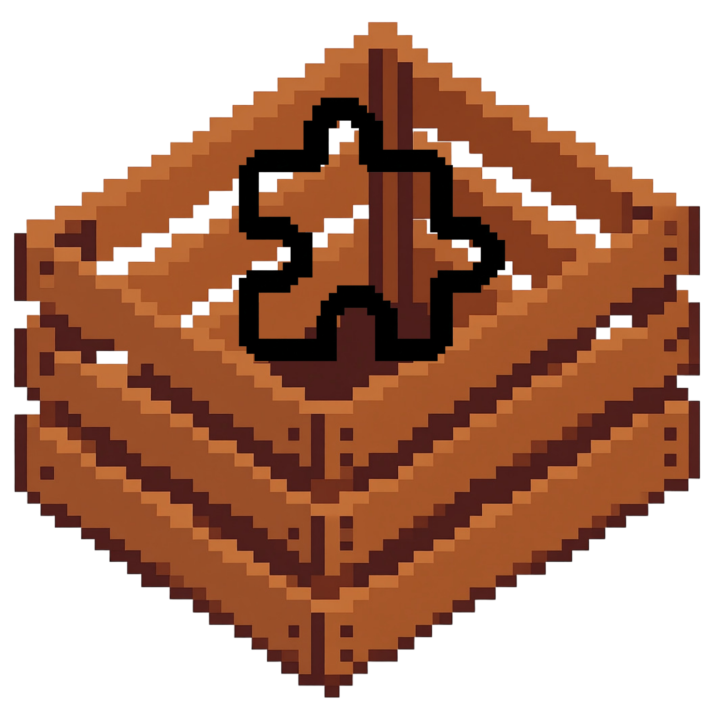

Desktop mix lab, crate store, plugin playground.
ChannelCrate
A retro modular music player for local files, provider decks, waveform prep, plugin windows, playlists, clip crates, Studio add-ons, and a free community marketplace.
Download app
Mac and Windows builds, one crate system.
App installers live on GitHub Releases so GitHub Pages stays light. Plugin `.crate` files download directly from this site.

macOS Apple Silicon / ARM DMG from GitHub Releases macOS Intel Intel DMG from GitHub Releases
Download for Windows 64-bit installer from GitHub Releases
Windows portable 64-bit portable from GitHub Releases .crate format Project, plugin, add-on, preset, clip, playlist, bundle Update agent notes Files needed for in-app GitHub release updatesxattr -dr com.apple.quarantine /Applications/ChannelCrate.app
The Mac release folder also includes a helper named Fix ChannelCrate Preview.command.
Crate Market
Free plugins, add-ons, store-installed themes, and future community crates.
The marketplace is static here, but it is shaped like the future ChannelCrate site: search, categories, theme previews, add-on modes, and clear export rules.
Crate system
Uncrate, Recrate, Quick Crate, and Crate Locker.
Users can export every crate type except themes. Themes are installed from the market so the app can grow a curated visual library without turning theme files into random exports.
For builders
Community plugin store path.
Plugins are catalog entries now, but the store is ready for the `.crate` idea: free downloads, creator pages, version history, preset packs, clip packs, playlist crates, and bundled project crates.